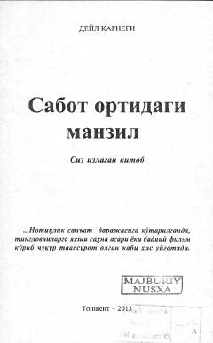

SONotiqlik san'ati va omma oldida erkin so'zlash sirlari haqida amaliy qo'llanma.
Ushbu kitob notiqlik san'ati, o'ziga bo'lgan ishonchni oshirish va omma oldida erkin so'zlash ko'nikmalarini rivojlantirishga bag'ishlangan. Muallif o'z tajribalari asosida qo'rquvni yengish va fikrlarni mantiqiy bayon etish bo'yicha amaliy tavsiyalar beradi.